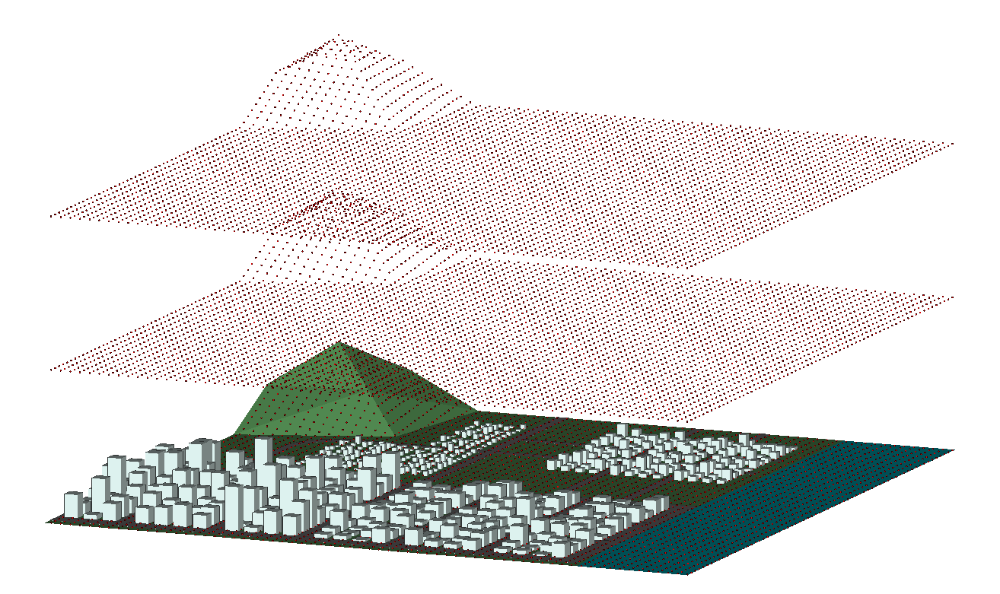
Scene requirement analysis
With the advent of 6G networks, global communication systems face unprecedented challenges and opportunities, particularly in the realms of on-demand multi-scenario services and the construction of intelligent networks. Grounded in the concept of a Channel Knowledge Map (CKM), the paper establishes the 6G omni-scenario knowledge base (OSOD 6G) towards the comprehensive physical context of space-air-ground sea environments. Centered on the pivotal channel parameters between transceivers, the OSOD 6G elucidates the intrinsic relationships among subject, environment, requirement, and knowledge through an ontological framework.
Hover the mouse to view in-depth analysis ➔Technical details and model architecture
Specifically, we firstly construct ontology-based framework for seven distinct scenarios, which includes urban areas at various stages of development, plain, mountain, and ocean. Secondly, we deploy a diverse array of signal sources including omnidirectional base stations, directional base stations, and satellite in accordance with urban developmental stages. Thirdly, densely positioning receivers both aerially and terrestrially and employing ray tracing to extract channel knowledge. Subsequently, the data is filtered, integrated, and organized according to a predefined data schema. This process enables the construction of OSOD 6G that supports scalability, rapid indexing, and targeted analysis. Furthermore, we conducted visualization and simulation verification of OSOD 6G from multiple dimensions of omni-scenario knowledge inference,includin diverse signal transmitters, urban typologies, receiver altitudes, and CKM fitting performance.
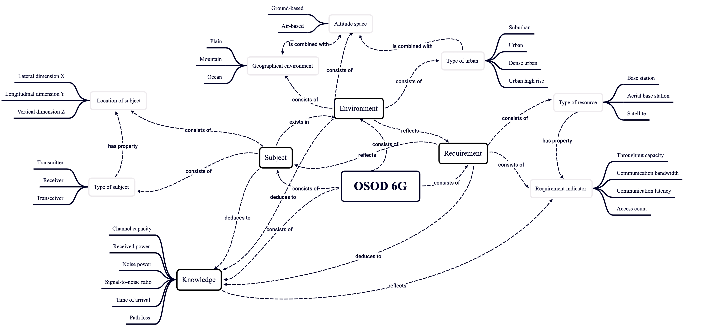
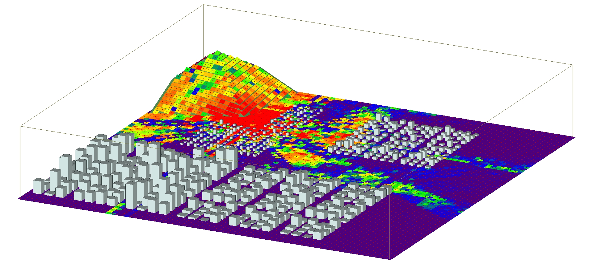
Scene requirement analysis
We present the OSOD 6G ontology structure in a graphical form for intuitive representation. The central node, OSOD 6G, encompasses five primary entities: subject, environment, requirement, and knowledge. Subject includes Type of subject and Location of subject. Environment encompasses Geographic environment, Altitude space,and Type of urban. Requirement covers Type of resource and Requirement indicators. Knowledge incorporates parameters such as channel capacity, received power, noise power, signal-to-noise ratio, time of arrival, and path loss.
Hover the mouse to view in-depth analysis ➔Model architecture
we employ ray tracing to infer the channel capacity of the scenario, there by constructing the CKM.The CKM for a single base station, a single urban area, and a single-layer receiver is depicted from 3D and 2D projections, respectively.
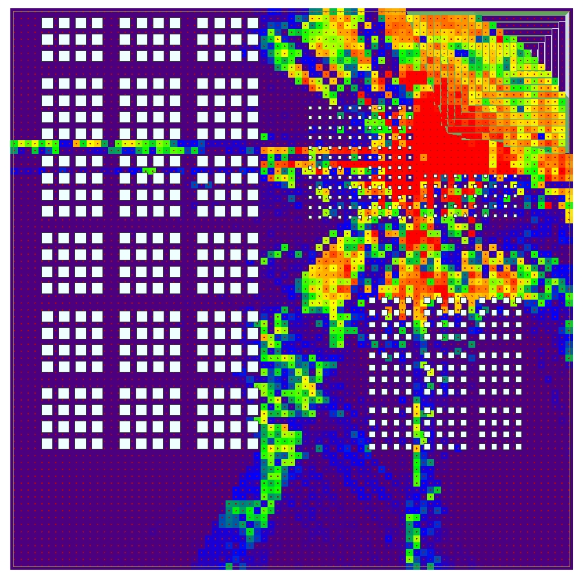
Group 1: Spatial distribution map of OSOD 6G channel capacity for ground base stations in different scenarios
When the signal transmitting end is the ground base station, the visualized results of the OSOD 6G channel capacity distribution under different city types and altitude levels are as follows.
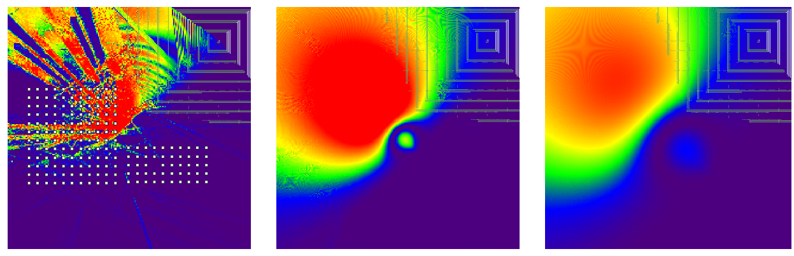
■ Visualized result A
This figure illustrates the channel capacity distribution in suburban environments at altitudes of 2m, 150m, and 300m.
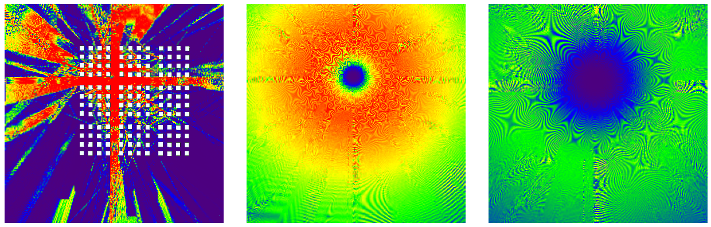
■ Visualized result B
This figure illustrates the channel capacity distribution in urban environments at altitudes of 2m, 150m, and 300m.
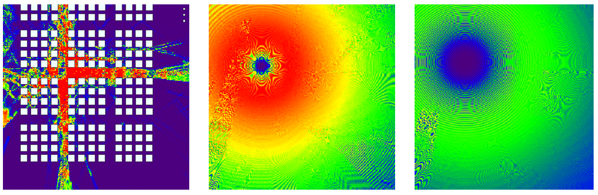
■ Visualized result C
This figure illustrates the channel capacity distribution in dense urban environments at altitudes of 2m, 150m, and 300m.
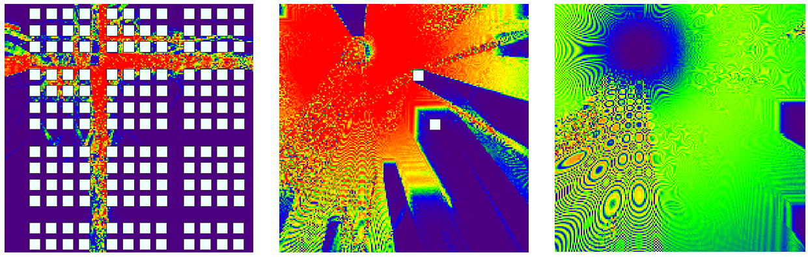
■ Visualized result D
This figure illustrates the channel capacity distribution in urban high-rise environments at altitudes of 2m, 150m, and 300m.
Group 2: Spatial distribution map of OSOD 6G channel capacity for high-altitude platforms in different scenarios
When the signal transmission end is an high-altitude platforms, the visualized results of the OSOD 6G channel capacity distribution under different city types and altitude levels are as follows.
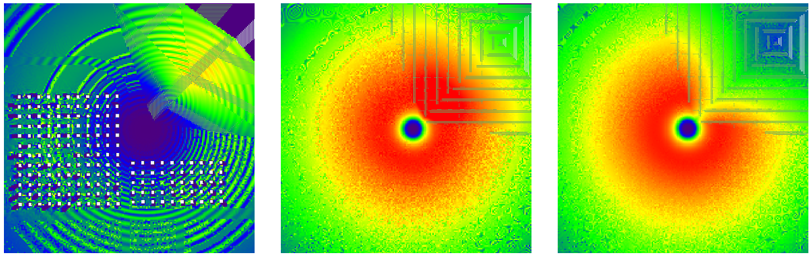
■ Visualized result E
This figure illustrates the channel capacity distribution in suburban environments at altitudes of 2m, 150m, and 300m.
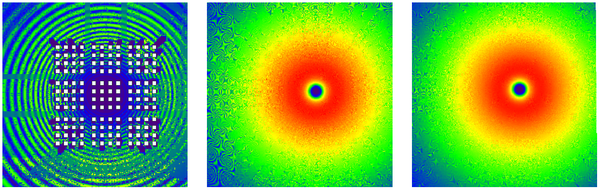
■ Visualized result F
This figure illustrates the channel capacity distribution in urban environments at altitudes of 2m, 150m, and 300m.
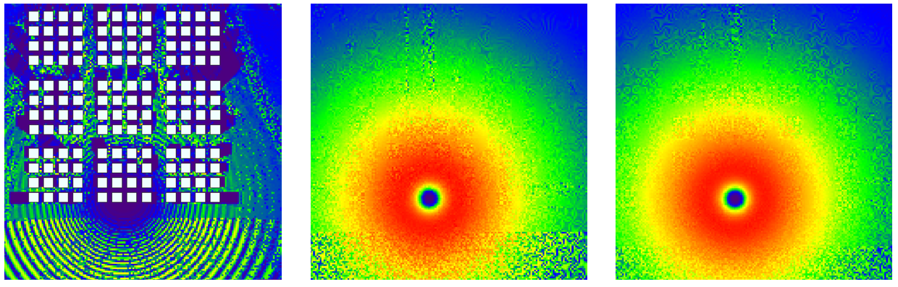
■ Visualized result G
This figure illustrates the channel capacity distribution in dense urban environments at altitudes of 2m, 150m, and 300m.
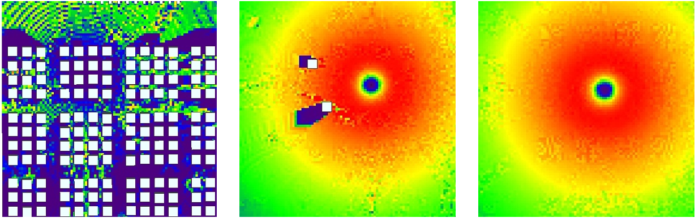
■ Visualized result H
This figure illustrates the channel capacity distribution in urban high-rise environments at altitudes of 2m, 150m, and 300m.
Group 3: Spatial distribution map of satellite OSOD 6G channel capacity at different altitudes
When the signal transmitting end is the satellite, the visualized results of the OSOD 6G channel capacity distribution under different city types and altitude levels are as follows.
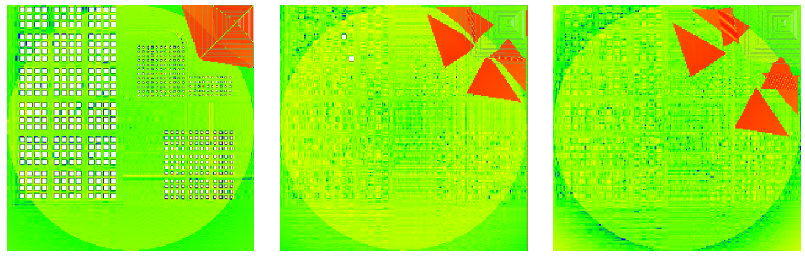
■ Visualized result I
It shows the channel capacity of the entire scene area at 2 meters, 150 meters, and 300 meters.
OSOD 6G Partial Dataset
It includes complete calculation data such as environmental parameters, base station coordinates and channel capacity.